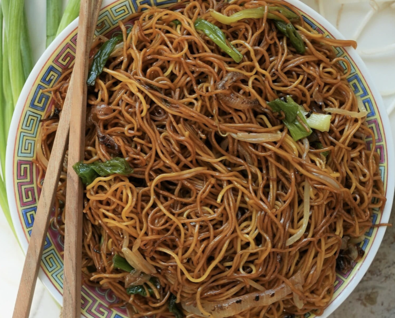

Ingredients (200g portion)
- Egg noodles 200g
- Soy sauce 3tbsp
- Shaoxing wine 1tbsp
- Sriracha sauce 1tsp
- Brown sugar 2tbsp
- Tamari sauce 1tbsp
- Sesame oil 2tsp
- Chives 60g
- 2 carrots
- Soy sprouts
How to
Chop chives and carrots into thin sticks.
Mix all 1-6 ingredients and stir uniformly to prepare the sauce.
Place Wok on gas, add 1 tbsp of peanut oil and bring to high temperature, until begins to smoke. Then drop carrot, chives and sprouts, and stir quickly for 1 minute. Set aside.
Boil noodles. When boiled. Heat 1 tbsp of peanut oil on Wok, and drop all noodles into. Fry for 2-3 minutes.
Mix noodles, veggies and sauce in Wok, stir fry for next one minute.
Should look like this.
Recommendation
Pure Bliss!